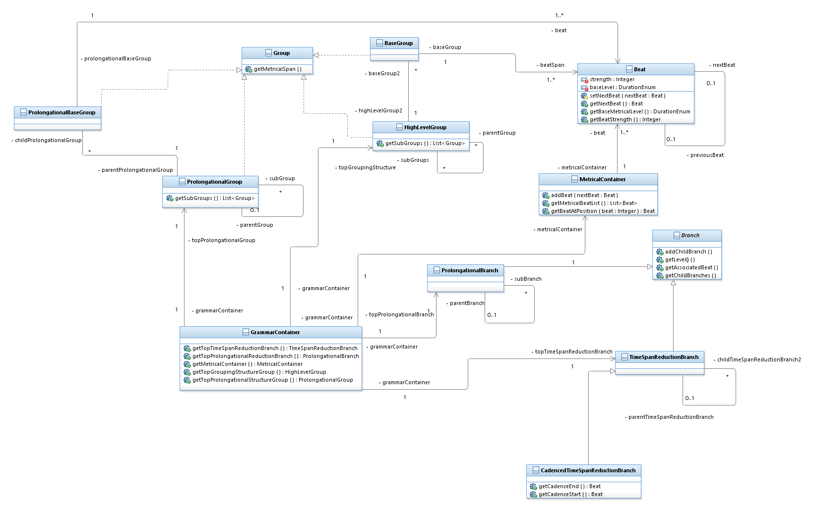

The Music Generator program has implemented an object oriented way of encoding GTTM grammars. This document will give an overview as to how each part of the grammar has been implemented within the program
The general structure of the grammar as implemented within the program can be seen represented in the class diagram:
The Grammar_Elements package contains several packages that encapsulate the different aspects of the GTTM grammar analysis. Here are the packages contained within the module and an explanation as to their purpose and structure:
The grouping structure package contains classes designed to encapsulate details concerning the grouping structure of a piece of music, as well as prolongational grouping structure.
Here is a list of all the classes within the module and their use
An interface type document that contains the methods all groups should provide.
At this stage it provides the following method:
A class to be used to describe the lowest level of the grouping structure. A BaseGroup object is associated directly with a span of Beat objects.
A class to be used to describe higher levels of the grouping structure. A HighLevelGroup object is associated with a span of Group objects (which can be either of type BaseGroup or HighLevelGroup)
A class to be used to describe the lowest level of the prolongational grouping structure. A ProlongationalBaseGroup object is associated directly with a span of Beat objects.
A class to be used to describe higher levels of the prolongational grouping structure. A ProlongationalGroup object is associated with a list of one or more contiguous Group objects (either of type ProlongationalGroup or ProlongationalBaseGroup)
The MetricalStructure package contains classes used to describe the metrical structure of a piece. It contains the following classes:
The Beat class is used to describe one Beat in the metrical structure. It encapsulates details concerning its position, the next and previous Beat object, and its strength.
MetricalContainerThe MetricalContainer class is used to encapsulate a series of Beat objects. It performs well-formedness checks on the Beat objects associated with it to ensure that the pertinent metrical well-formedness rules are adhered to (Please refer to this page on the well-formedness rules implementation.).
The ReductionBranches Package is used to encapsulate details of the time-span reduction and prolongational reduction analyses. Both analyses are structured as tree structures, but encapsulate different details depending on the type of analysis. These tree structures are mapped onto Beat contained within the metrical structure analysis. A Beat object must be mapped only once within a tree structure. When a Beat is mapped by a branch, that indicates that that Beat acts as a pitch instantiation beat.
Here are the units implemented within the program:
This is an abstract class used to implement that basic methods of a branching tree structure. It provides methods to access branch's parent branch, the Beat object associated with the branch, and methods to access the child branches of the branch.
ProlongationalBranch objects are used to construct a prolongational reduction analysis. Extends the Branch class, and extends it so that each branch of the prolongational reduction has a ProlongationalTypeEnum associated, which indicates its branching type as per GTTM theory.
The ProlongationalTypeEnum is used to describe the types of each prolongational branch. It is used in implementing the PRWFR 2 well-formedness rule.
The TimeSpanReductionBranch extends the branch class for use in constructing time-span reduction analysis structures. It checks to ensure only TimeSpanReductionBranch objects are associated as children.
The CadencedTimeSpanReductionBranch class extends the TimeSpanReductionBranch class for use in describing branching elements that map onto pitches that form a cadence within a piece of music. It is used to map onto two Beat objects which indicate the starting pitch of the cadence, and the ending pitch of the cadence.
The Grammar_Elements package further contains the GrammarContainer class which is used to encapsulate the separate elements of the GTTM analysis within one object. This is used to make passing a grammar structure around the program easier and less prone to error. It is initialised with the top branches of the time-span and prolongational reduction, the top group of the grouping structure, the top group of the prolongational structure, and a MetricalContainer object that contains the whole span of beats that the grammar analysis maps onto. From these objects all aspects of the grammar structure can be accessed.
The GTTM Well-Formedness Rules are checked at various stages in constructing grammar analyses. In particular, GrammarContainer objects perform a series of checks when initiated to ensure that the structure is not ill-formed.
For further information on how well-formedness rules are implemented within the program, please see here.